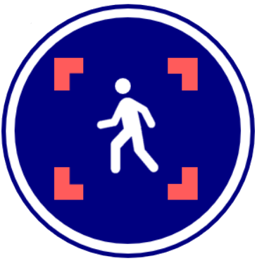

Welcome to our graduation project new index
First, please upload the video
Upload video
Skip rate
?
Next step
Please choose the object you want to detect from the list, if not found in the list please upload an image of the object
note: you can choose more than one object by click ctr + click on object*
Select an object
person
bicycle
car
motorcycle
airplane
bus
train
truck
boat
traffic light
fire hydrant
stop sign
parking meter
bench
bird
cat
dog
horse
sheep
or
Upload image
Go back